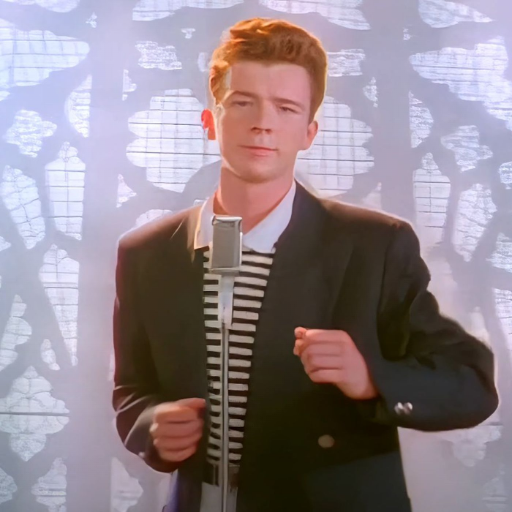

События манги происходят в 1938-1939 годах. В ней рассказывается о злоключениях Джозефа Джостара, внука протагониста первой части, Джонатана Джостара, в которых он развивает свои врожденные способности к хамону, чтобы победить создателей каменной маски — древних сверхсуществ, так называемых, людей из колонн.
1 серия: Пришествие Дио. 1868 год. В результате нападения разбойника Дарио Брандо повозка падает с обрыва, после чего Мэри погибает. Её муж, Джордж Джостар, и новорожденный сын Джонатан выживают, и Джордж думает, что Дарио спас их.
Восемнадцатилетний Джозеф — высокий (195 см), красивый и хорошо сложенный молодой человек со светлыми глазами. У него короткие, тёмные и растрёпанные волосы, за исключением которых он очень похож на своего деда Джонатана Джостара.
Джонатан-джентельмен и самый добрый
Джозеф-самый хитрый и возможно умный
Джотаро-физически силен и вынослив
Джоске- самый блатной и крутой
Джорно-самый сильный
Джолин-самая сексуальная
Темы
Видео
Статьи
Ролики
Новости
Сохранённое
Видеоигры
Детям
Всё о Дзене
Вакансии
Дзен на
iOS и Android
Ещё
Сюжет первого сезона JoJo's Bizarre Adventure📺
3 прочтения
6 января
Phantom Blood
Многие пропускают первую арку «ДжоДжо», поскольку она во многом отличается от последующих и незаслуженно считается скучной, но именно в ней происходит знакомство с наиболее важными персонажами серии.
По сюжету, первый ДжоДжо — британский аристократ XIX века Джонатан Джостар — противостоит Дио Брандо, планирующему обманом лишить героя наследства. В погоне за богатством и могуществом Дио обращается в вампира и обретает бессмертие с помощью древнего артефакта — каменной маски. Чтобы сразить соперника, Джонатан обучается боевому искусству «Хамон».
Помимо главного героя и антагониста в Phantom Blood появляются и другие важные для вселенной персонажи: наставник ДжоДжо — Уилл Цеппели, их союзник — Роберт Спидвагон и жена Джонатана — Эрина Пендлтон. Цеппели погибает во время очередного сражения с Дио, но имя его семьи ещё не раз появится в будущих арках серии.
События первой части заканчиваются, когда ДжоДжо побеждает Дио ценой собственной жизни. Оба пропадают без вести. Эрина спасается и отправляется в Америку с сиротой Элизабет, спасённой Джонатаном. Там она вскоре рожает сына Джорджа.

Многие пропускают первую арку «ДжоДжо», поскольку она во многом отличается от последующих и незаслуженно считается скучной, но именно в ней происходит знакомство с наиболее важными персонажами серии.
По сюжету, первый ДжоДжо — британский аристократ XIX века Джонатан Джостар — противостоит Дио Брандо, планирующему обманом лишить героя наследства. В погоне за богатством и могуществом Дио обращается в вампира и обретает бессмертие с помощью древнего артефакта — каменной маски. Чтобы сразить соперника, Джонатан обучается боевому искусству «Хамон».